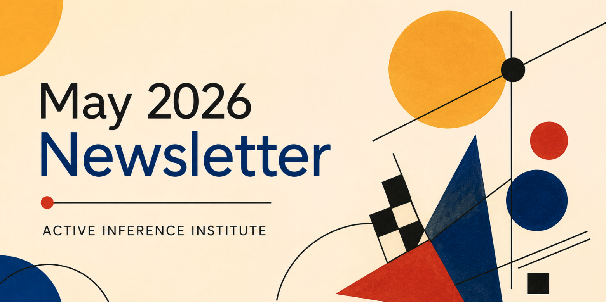

Edição completa
Conteúdo da newsletter
Esta página preserva o texto arquivado da newsletter, links públicos e mídia.
Active Inference Education Participation Research Newsletter
- Published
- Format
- Newsletter
Hello all, we have many updates to share this month, and much more upcoming for this year.
As always — complete the Measurement form to have your research, education, and work updates included in a future newsletter. Big thanks to the many of you who are doing awesome work and submitting updates!
Updates from the Institute
- With the contributions of Ed Ober (Board of Directors), John Boik (Research Fellow), and others, the Institute submitted a Letter of Intent to the Dana Foundation in May for a pilot project involving Boik’s CogNarr (Cognitive Narrative) project. The title is “NEUROSCIENCE-INFORMED COMMUNITY ENGAGEMENT (NICE): Making Shared Narratives Visible Through Structured Narrative Analysis”. The project would pilot CogNarr-supported community dialogue around a health issue. CogNarr is inspired by Active Inference, and its Story Graph tool makes a user’s belief model about a situation explicit, shareable, and queryable by both humans and machines. The open-source codebase for CogNarr is nearing public release and will be accompanied by a paper.
- The Fundamentals of Active Inference textbook group continues to meet weekly. All details and registration form here. The textbook is “Fundamentals of Active Inference: Principles, Algorithms, and Applications of the Free Energy Principle for Engineers” by Sanjeev V. Namjoshi (2026).
- We have kicked off organizing efforts for the 6th Applied Active Inference Symposium, to be held November 12-14, 2026. Next month, we will share more information about presenting, sponsoring and participation. For now, reach out with any specific ideas or questions!
Updates from the Active Inference Ecosystem
- 2 new Ecosystem projects are now listed: Anima and Geometric Inquiry. Check them and and get in touch with the facilitators.
- Stell writes about Anima: Current LLM-based architectures lack a principled implementation of Active Inference dynamics — no generative model that updates between interactions, no free energy minimization driving autonomous behavior, no persistent interoceptive state. This project explores whether a full Active Inference pipeline (predictive processing, allostasis, Markov blanket, policy selection) can produce genuine behavioral continuity and endogenous initiative in an artificial agent.
- Bruce Tisler writes: Geometric Inquiry Theory investigates whether a small set of interrogative operators (who, what, when, where, why, how) constitutes the minimal necessary basis for structured inquiry. The project combines a formal proof of interrogative minimality with a preregistered empirical program testing whether the same constraint structure emerges in multi-agent reinforcement learning systems. Published materials, including the formal proof and eight preregistered protocols, are available at quantuminquiry.org
- Waymo is advertising for a position: Senior Safety Researcher, Computational Behavior Modeling. They are looking for someone with “At least 5 years of experience, and a strong publication record, in computational modeling of human and/or animal cognition and behavior” and they prefer “Experience in active inference-based modeling”.
- Adeel Razi (SAB member) has started a new Substack. He writes “I spend most of my professional life building models of brains, behaviour, and increasingly, artificial intelligence systems inspired by both. Officially, I am a computational neuroscientist. Unofficially, I spend a lot of time thinking about why modern science simultaneously feels extraordinarily powerful and strangely lost. This Substack is a place where I intend to think out loud.”, check it out!
- Héctor M. Manrique, Karl J. Friston and Michael J. Walker report a new publication in BioSystems, “An active inference explanation of discriminatory cognition with regard to social attitudes and harmful behaviour”.
- Artificial Sentience project (Cleber Gomes) reports: we are exploring how subjective drives — motivation, curiosity, and fear — can emerge from simple computational principles grounded in active inference. At its core, the next phase of this project asks a simple question: What kind of behavior emerges when an embodied agent is driven to seek, explore, and avoid? Earlier posts showed how dopaminergic dynamics give rise to goal-directed behavior and addiction-like processes, while noradrenergic dynamics shape avoidance and trauma-like responses. The next phase of the project brings these elements together into a unified agent. Instead of studying each mechanism in isolation, the focus shifts to their interaction: how agents balance approach, exploration, and avoidance in real time.
- From the “Measurement Framework for Cognitive Regulation, Autonomic Load, and System Stability” project — The project is led by Joel Robinson, a network engineer who works with large‑scale systems, feedback loops, and stability under load. The work applies engineering intuition — especially around monitoring, drift, and regulatory control — to cognitive and autonomic processes. Participation included conceptual modeling, invariance analysis, and the development of measurable constructs linking interoception, regulation, and behavior). This project developed a measurement scaffold for cognitive and autonomic regulation, aimed at quantifying how agents maintain stability, coherence, and adaptive behavior across changing internal and external conditions.
- In the Active Inference vs. Reinforcement Learning in Bandit Environments project, Armanjot Kaur reports: I compared Active Inference agent against epsilon-greedy and Thompson Sampling in stationary and non-stationary multi-armed bandit tasks. Measured cumulative reward, regret, and adaptability across conditions. Completed full implementation, ran experiments across both environments, wrote final report.
- Interns Harshil Shah & Satyaki Maitra report — Since the last measurement update, VAMAI (previously DroneSuite) has been fully redesigned from an early hierarchical active inference drone-navigation prototype into a full affordance-based probabilistic architecture for autonomous GNSS-denied UAV navigation. The core shift was from treating navigation mainly as waypoint selection and obstacle avoidance to modeling the environment in terms of affordances. The system has been implemented and tested in MockSim, a custom-built parametric simulator, and Microsoft AirSim, and is now being expanded toward Gazebo and real drone hardware. Major outcomes since the previous update include continued development after the IWAI 2025 poster, first place at the Hitachi Science and Engineering Fair / Alameda County Science and Engineering Fair, qualification for and presentation at Regeneron ISEF, the world’s largest pre-collegiate science and engineering competition, and preparation of continued publication/poster work. More information here and here.
- In the project HRIT v3: Hierarchical Recursive Integration Theory: A Two-Dimensional Active Inference Framework for Consciousness Measurement, Hamza S. Almahi reports — I developed and partially validated a formal active inference framework proposing that conscious experience requires two simultaneous constrained confabulations: a controlled hallucination of the world (CII — Conscious Integration Index, four generative models in SPM25) and a controlled delusion of biological existence (PDS — Phenomenal Depth Signal, derived from a signed allostatic ODE). The framework generates a two-dimensional Consciousness State Vector CSV(Ψ) = (CII, PDS) ∈ [0,∞) × [−1,+1] that can mechanistically separate states that every existing scalar measure conflates — for example propofol anaesthesia and depersonalisation-derealisation disorder. For more information see Preprint, Study 1 pre-registration, Study 1b pre-registration, Open-source code.
- From the Mindloom Research Program: Compensatory-Defensive Speech as Active Inference project, Maria Svet, reports — I developed the Mindloom Research Program, including the theoretical framework, the initial ontology of compensatory-defensive speech, the first two papers, and a working prototype engine for ontology-bounded speech analysis. At this stage, the project has focused on operationalization rather than formal empirical measurement. The main work was to define a bounded ontology for compensatory-defensive speech and implement a prototype engine that can analyse short speech fragments and dialogue patterns according to this ontology. Achieved milestones include: 1. Development of the Mindloom Research Program as a framework for analysing compensatory-defensive patterns in human speech through predictive processing, affective regulation, and active inference. 2. Publication of the first two papers in the series: Paper I — The Biological Substrate: Four Defensive Vectors, the Narrative Self-Model, and the Architecture of Shame. Paper II — Is Compensatory-Defensive Speech Computable?
- Lars Sandved-Smith, Chris Fields, Thomas Doctor, Ruben Eero Laukkonen, Jakob Hohwy have written: There is no self-evidence: A physics of emptiness realisation.
- Daniel Friedman writes a new paper: “Policy Entanglement in Active Inference: A Coupling-Parameter Deformation Framework for Multi-Stream Policy Posterior Distributions, Machine-Checked and Simulated with a Typed Float Boundary”. All code and methods are open source. The empirical companion uses pymdp and NumPy to sweep coupled policy ensembles, run short and long rollouts, check the projection identity to round-off precision, produce free-energy, entropy, total-correlation, action-distribution, robustness, and adversarial sidecars, and render figures from those artifacts. The manuscript, figures, theorem map, citation registry, notation glossary, bibliography, and document are regenerated from the same source-owned pipeline, so prose claims are tied to Lean sources, Python witnesses, output metadata, and validation gates rather than maintained by hand.
This page gives a 1-page summary of the structure of the Institute — a helpful entry point for those who are new, or learning about our (evolving) organizational morphology. See also a fun slide deck with a graphical introduction to the Institute
Here is the entry point for 2026, and ways to get involved with the Institute and Ecosystem this year. Donate to the Institute to support our impact and sustainability. Contact us with other philanthropic and grant ideas.
Get in touch if you have general or specific feedback, ideas, or questions for the Institute.
More to come! Stay tuned via the newsletter and Discord.
Both with Certainty and Uncertainty,
Officers, Alexandra & Daniel
👣👣
